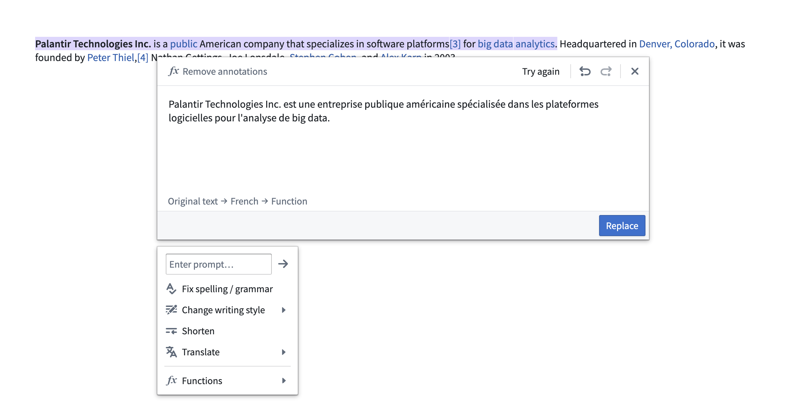

AIP features in Notepad
Foundry Notepad features a collection of AIP features designed to help you share Ontological insights faster and more efficiently. You can use AIP in Notepad to automatically spellcheck, shorten, modify, or translate your text - while preserving its existing formatting. You can also use Functions to modify Notepad contents with custom behavior configured in AIP Logic or other published functions.

Notepad's AIP features include:
- Custom prompt: Enter your own instructions in the Enter prompt... field to apply custom transformations to your text.
- Fix spelling and grammar: Support for English, French, German, Japanese, Korean, Spanish, and Ukrainian.
- Change writing style: Select between âProfessionalâ (suitable for reports) or âConfidentâ (suitable for announcements) styles.
- Shorten: Makes text blocks more concise.
- Translate: Translates the text from one supported language to another.
- Preview multiple commands: Preview the result of multiple AIP operations on the same text block, such as correcting spelling, then making text concise, then translating to French, before replacing your original text.
- Functions: Use in-platform functions that accept a string input to replace text in your document or template. These can be used in conjunction with other AIP operations. If AIP is not enabled, you will still be able to edit Notepad content with functions. Refer to custom functions for more details.
Activate AIP features
To use AIP in Notepad, select the Edit with AIP button in the toolbar.

Note: AIP feature availability is subject to change and may differ between customers.